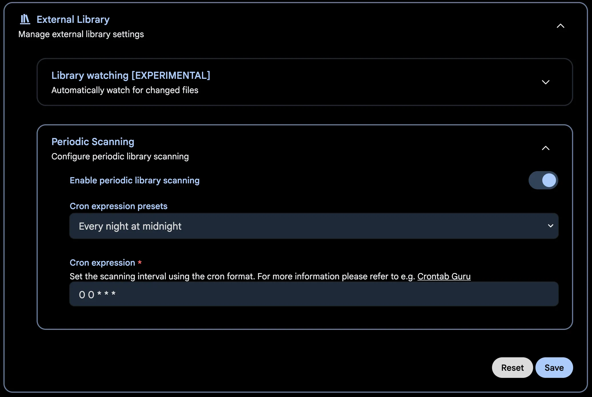
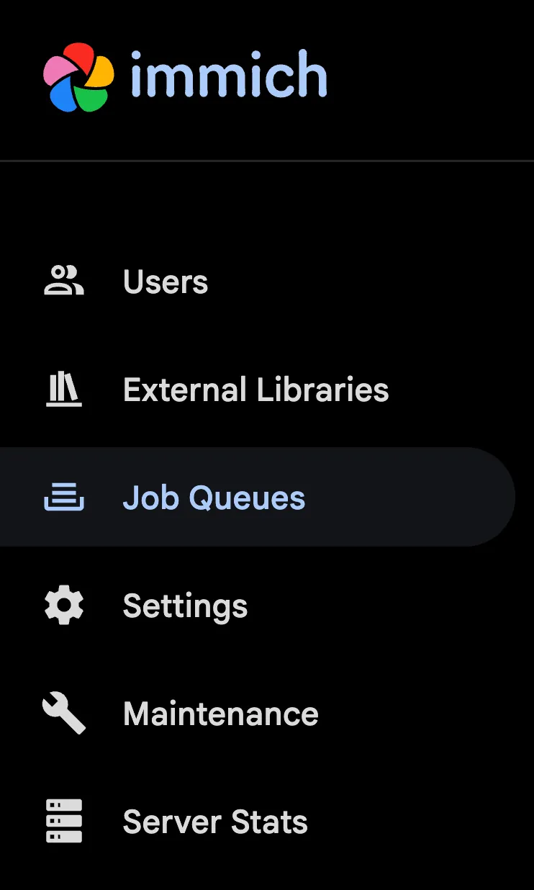

Immich 藏得最深的 4 个冷技巧：把自托管相册用出花来
你以为 Immich 只是个自托管的谷歌相册替代品？其实它还藏着外部库挂载、任务队列手动调度、Takeout 专用导入工具等大多数用户没发现的进阶玩法，这篇把这些冷技巧扒个干净。
你以为 Immich 只是个自托管的谷歌相册替代品？Immich官网上把它定义为「开源自托管照片库」，但真把 Docker Compose 跑起来、手机端装个 App 自动备份之后才发现——这才哪到哪。我前前后后折腾了大半个月，翻遍了设置面板的每一个角落、试遍了各种导入路径，才发现这玩意儿藏得真深——那些"默认不会主动告诉你"的功能，才是把 Immich 用透的关键。
第一个惊喜：外部库——十年照片原地不动直接进时间线
把硬盘上攒了十年的照片目录灌进 Immich，你是不是也纠结过"文件要搬家吗"？拷进 UPLOAD_LOCATION 既费空间又打乱原来的目录结构——按年份、按旅行、按家庭分类好的文件夹，拆碎了重新组织太别扭。
直到我在 Docker Compose 的 volume 挂载里随手加了一行、然后在网页端发现了那个叫外部库（External Libraries） 的入口。
这玩意儿干的事情极其简单：文件原地不动，Immich 直接读进来。你只需要在 compose 文件里把已有目录挂进容器，然后在 Immich 后台登记一下路径——Immich文档里有完整的挂载参数说明——它就会扫描这个目录，把里面的照片视频全部登记进时间线——不复制、不移动，原来的目录结构一丝不动。
操作骨架就是三步：compose 里加挂载、网页端建库、手动触发一次扫描。听起来平平无奇，但背后有个关键的读写模式选择，直接决定了四件事：
- 读写模式（默认）：Immich 可以写这个目录——编辑照片时能写 XMP 旁路文件，清空回收站时能真删原文件；
- 只读模式（挂载加
:ro）：Immich 对该目录只读。代价很明确：编辑功能不可用（元数据改不了），照片进回收站清空时会"复活"回时间线——因为删不动原文件。
取舍口诀很简单：想让 Immich 全权管理 → 读写；想保证 Immich 绝对不碰原始文件 → 只读。
扫描也有讲究：手动扫描随时触发，适合刚挂载或批量改完文件后；定时扫描可以按库单独设间隔，增量识别新文件；支持文件系统事件的外部库甚至能做到"文件一落盘就登记"——监控（Watch）模式，这个官方文档提得不多，但对于那些持续往某个目录扔照片的人来说简直是神器。
有一点要注意：外部库的去重发生在单个库内部，而且外部库不参与上传区的去重——同一张图既在外部库又上传过一次的话，时间线可能出现两张，需要自己清理。另外，外部库的文件不在 UPLOAD_LOCATION 里，备份清单上那几个默认目录不包含它——挂了外部库的家庭，文件层备份一定要覆盖挂载源目录，别让外部库成为备份体系的漏网之鱼。

第二个惊喜：任务队列的手动调度——批量导入前先"关掉"机器学习
我第一次传完两千张照片，点开智能搜索想试试语义搜，结果搜啥都没结果。又去人脸页面看——空的。当时以为是部署出了问题，差点重装，直到朋友说"你去任务队列看看"。
原来 Immich 对每个文件有一串后台工作要做：元数据提取、缩略图生成、智能搜索（语义向量计算）、人脸识别、视频转码。上传完成不等于"处理完成"——队列没跑完，功能就用不了。
Jobs 页面藏在网页端左侧的 Administration（管理）→ Job Queues（任务队列）。每个任务类型一张卡片，显示等待中/活跃/成功的数量，右上角有三个全局按钮：全部暂停、全部恢复、清空失败的。
这页面最有用的不是看进度，而是批量导入前的节奏控制。给你个实用操作：
大批量导入前：暂停「智能搜索」「人脸识别」「转码」三类任务，先让照片全部传完、缩略图出齐；然后恢复它们，让机器学习在夜里慢慢跑——白天跑这些任务 CPU 风扇狂转，晚上跑完第二天起来就全好了。
机器发烫风扇狂转的时候，还能在管理后台系统设置里给任务限流——调并发数、调机器学习负载，或者直接手动暂停不需要的任务。
发现某类任务卡住了怎么办？卡片上会显示失败计数，点进详情能看到具体是哪个文件、报了什么错；清空失败后可以重跑。我遇到过微信转发来的图片没有 EXIF 导致元数据提取一直失败，清空之后跳过它继续跑，其他任务不受影响。

第三个惊喜：谷歌相册搬家别用官方 CLI——immich-go 才是正确答案
迁移季的重头戏：把在谷歌相册住惯了的几万张照片搬进 Immich。我一开始老老实实用官方 CLI 的 upload 命令，结果导入之后日期全乱、相册也没了——后来才搞清楚 Google Takeout 导出的根本不是普通目录。
Takeout 交给你的是一堆分卷压缩包，内部还有配套的 JSON 元数据文件——记录着拍摄时间、相册归属、地理信息，很多正是压缩包里照片 EXIF 缺失的部分。官方 CLI 的 upload 面向"普通目录"，根本不解析这套结构。
社区维护的 immich-go 专门吃这个格式：自动解开分卷、读取 JSON 元数据补全日期和归属、按原相册结构在 Immich 里重建相册。官方文档把它列为 Takeout 导入的推荐工具，安装包从官方下载拿。
完整流程四步：Takeout 导出 → 核对导出物（分卷数量、完整性）→ immich-go 导入（跑之前先看参数——"重建相册""处理 JSON 元数据"这些开关都在）→ Immich 侧收尾（等任务队列消化完、重新挂家庭分享体系）。
三个务实提醒别忘：先小后大（拿一个分卷试跑全流程）、迁移期间别删源（两边都有完整副本才算迁完）、账号冻结风险（大批量 API 操作在谷歌侧有触发风控的先例，Takeout 导出走网页分批下载更稳妥）。
第四个惊喜：你以为在跟云相册比免费？其实比的是"控制权"
Immich 跟商业云相册的对比，很多人停留在"免费、开源、隐私"这几个词——但真正的差距是成本结构和维护门槛的完全倒置。
云相册是订阅制，每月/每年付钱买空间和功能；Immich 是一次投入的硬件成本（电费 + 硬盘），空间上限由硬盘决定，加盘即扩，功能全免费。但云相册的隐性成本是零，Immich 的隐性成本是你的维护时间——升级、备份、排查故障都要自己动手。
有个细节值得说：多用户、共享相册、公开链接这些功能，Immich 不按人头收费。给家人开账号想开几个开几个，共享相册也不分等级——这一点对大家庭用户来说，省下来的订阅费很快就能覆盖一台旧电脑或 NAS 的成本。
我自己的建议是：先在旧电脑上装一套（Docker Compose 部署只要五分钟），用一两周再决定要不要把全部照片搬进来。完全不想碰技术操作的人，付费云相册省心得多——诚实面对这一点比冲动迁移更好。
最后说两个坑
第一个坑：只读外部库的回收站是假的。只读库的照片进回收站、清空时会复活回时间线——因为删不动原文件。设只读的时候就要接受这个特性。
第二个坑：后台备份的"无感"是相对的。安卓的电池优化、iOS 的后台刷新策略都会影响备份时机——Immich 后台备份有专门的设置页面，花几分钟调一下，比等它自己慢慢爬靠谱得多。
把 Immich 用透，关键在于不要把它当"一个 App"，而是把它当"一套系统"。外部库帮你绕开文件搬家的心理障碍、任务队列让你掌控机器负载、immich-go 解决最大的迁移痛苦——这些都是默认不会主动推荐的功能，但用对了，你的照片库才是真·你说了算。这套资料我顺手同步到了三个仓库——GitHub的开源主线、Gitee的国内镜像，还有GitCode的备份，哪边方便从哪边拿就行。